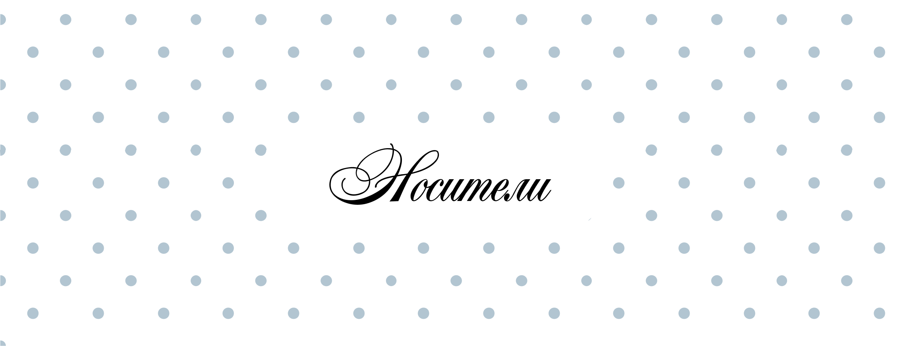
Фирменный стиль «Вешалки» строится как гибкая визуальная система, которая одинаково уместна как в digital-среде, так и в физических носителях. Единство элементов на всех поверхностях делает бренд сплошным, тактильным и немного чутким по ощущению.
В носители активно используются фирменные строчки, паттерны, нашивки, либо отрывки и текстовые нотации. Благодаря этому дизайн любого делового стационара остаётся частью единой визуальной среды.
Канцелярия и офисные носители
Фирменные ручки выполнены в лаконичной стилистике и поддерживают основную палитру бренда. Они используются как часть внутреннего сдайтинга и промо-набора. Сдержанное цвето- и шрифтовое решение позволяет сохранить аккуратный и современный визуальный образ.
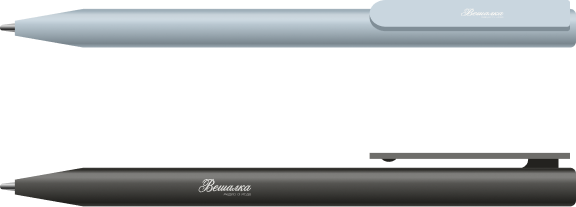
Конверт продолжает общую схему системы через сочетание воздуха, минимализма и фирменных деталей. Он может использоваться для подборочных отправлений, пригласительных и внутренних материалов.
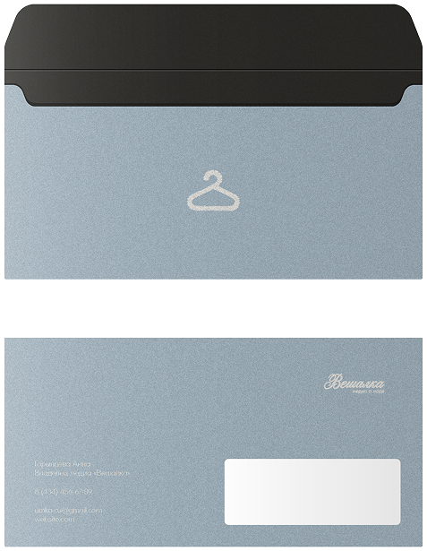
Бумажные стаканчики для кофе и кафе-to-go дают ощущение более живой и повседневной. На носителях используются паттерны, фирменные цвета и контрастные версии логотипа. Такой формат помогает перевести бренд в реальное городское среду.
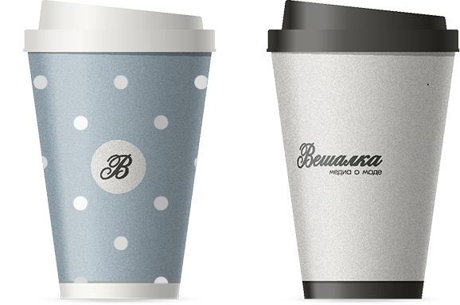
Коробка для мини-рассылок и партнёрских наборов поддерживает идею аккуратной и ценной упаковки. Минималистичное оформление позволяет сохранить ощущение чистоты и визуального воздуха.
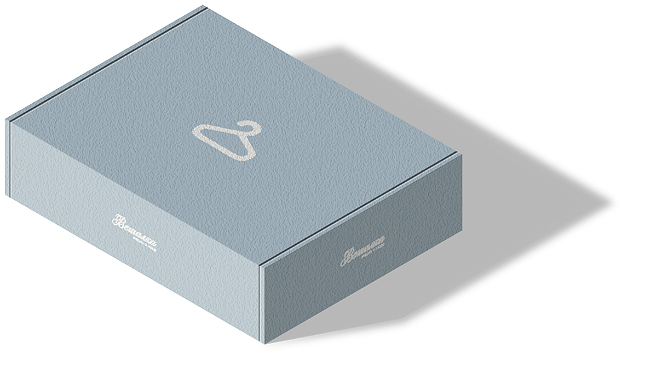
Блокнот для сотрудников выполнен в сдержанной стилистике и дополнении фирменными stitched элементами. Внутренние страницы сохраняют динамическую структуру и подходят для заметок, сохранённых и рабочих материалов.
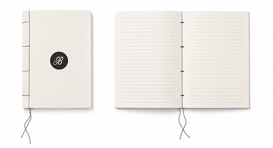
Папка для документов поддерживает более строгую часть визуальной системы. Тонкая цветовая база и вертикальная типографика помогают сохранить ощущение структуры и аккуратности.
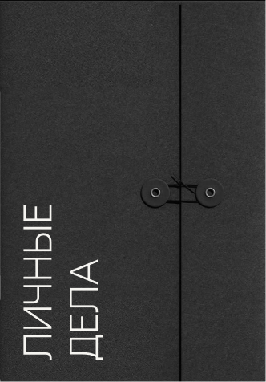
Календарь для сотрудников продолжает общую фирменную систему через сплошную цветовую палитру и использование паттернов. Благодаря этому он выглядит лёгким и невызывающим, сохраняя читаемость и функциональность.
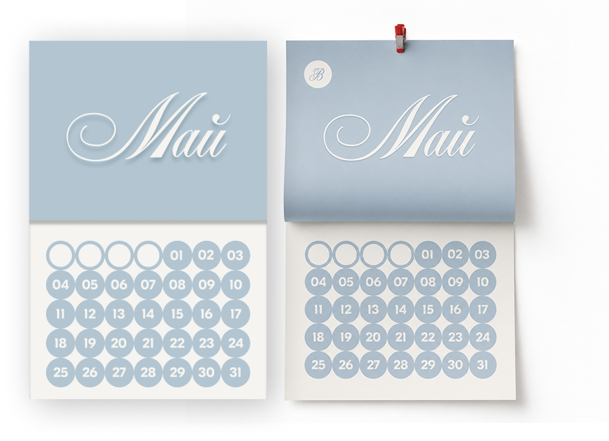
Бейджи сотрудников оформлены как часть общей линии бренда с использованием фирменной типографики, графических элементов и stitched-линий.
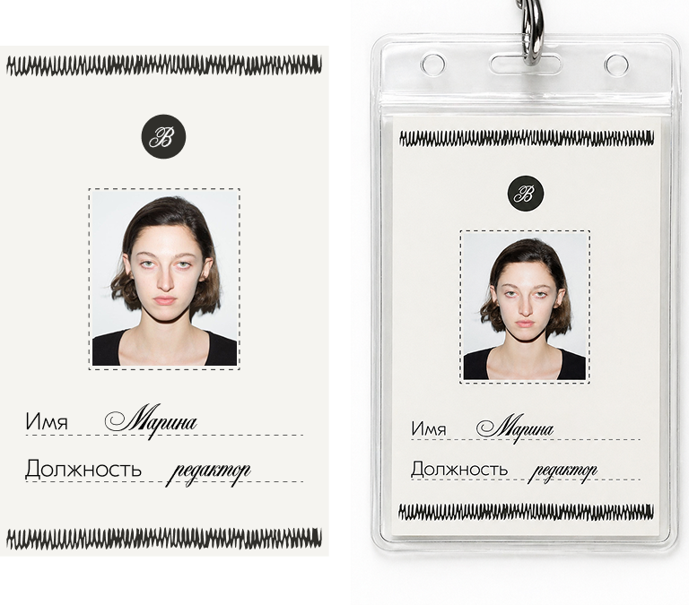
Фирменные скотчи используются как дополнительный элемент упаковки и визуальной коммуникации бренда. Они продолжают тему текстильности и ручной работы, которая несёт в своих решениях.
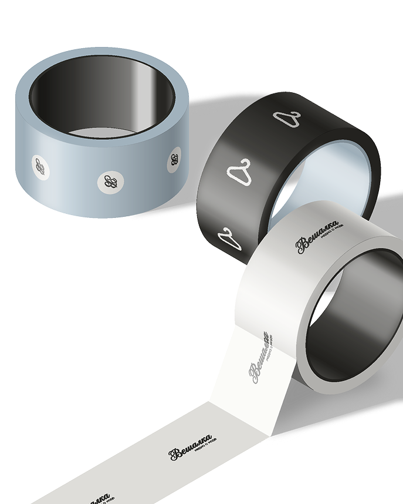
Текстильные носители
Шопперы выполнены в фирменной текстильной эстетике и напрямую поддерживают тему ручной работы и тактильности.
Они используются как самостоятельный мерч. Благодаря простым и сложным конструкциям шоппер выглядит аккуратным и полноценным товарным продуктом, а не полноценным повседневным предметом.
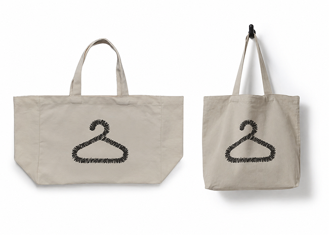
Стикеры и эмодзи
Набор фирменных стикеров помогает сделать коммуникацию бренда более живой и визуальной. В системе используются как типографические элементы, так и визуальные объекты, соотносящиеся с fashion-контекстом, интернет-эстетикой и сообществом.
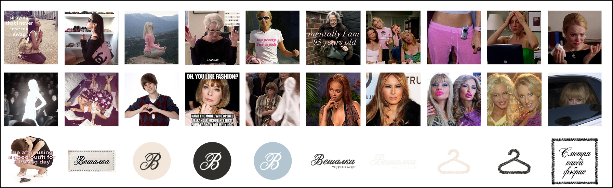
Стикеры поддерживают более неформальный подход — они помогают выстраивать коммуникацию там, где это уместно.
Фирменные эмодзи продолжают визуальный язык объектов в цифровой среде. В набор входят: логотипы, фирменные элементы, строчки и вешалки, которые могут использоваться в социальных сетях, сторис, новостях и оформлении контента.
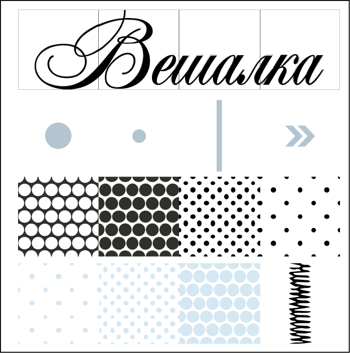
Шаблоны постов для социальных сетей
Система шаблонов для социальных сетей помогает сохранять визуальное единство контента и делает публикации узнаваемыми в ленте.
Шаблоны построены на сочетании воздуха, белого цвета и фирменных графических элементов. В системе используются сетки, паттерны, строчки и нашивки как дополнительная типографика.
Система включает несколько типов макетов: шаблоны для фотографии, текстовых публикаций, подборок, цитат и календарных форматов.
Несмотря на единый визуальный стиль, шаблоны достаточно адаптивные под разные типы контента без потери узнаваемости бренда.
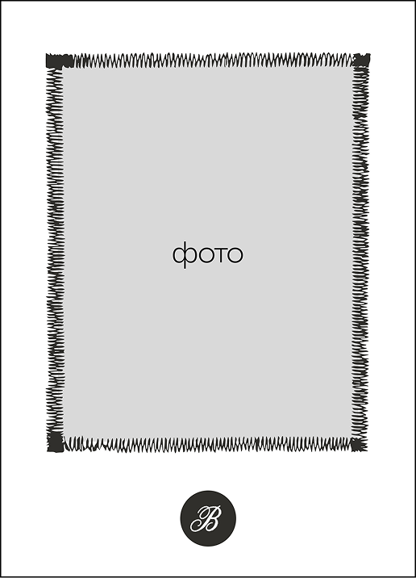
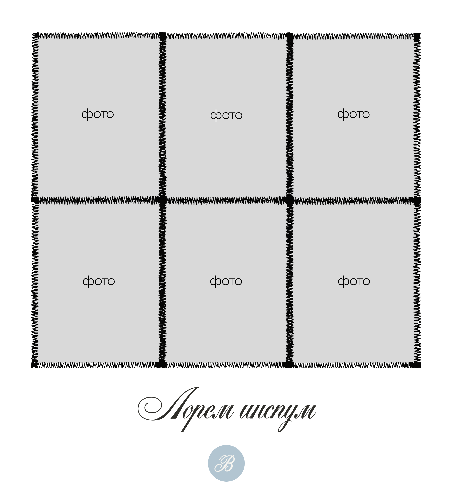
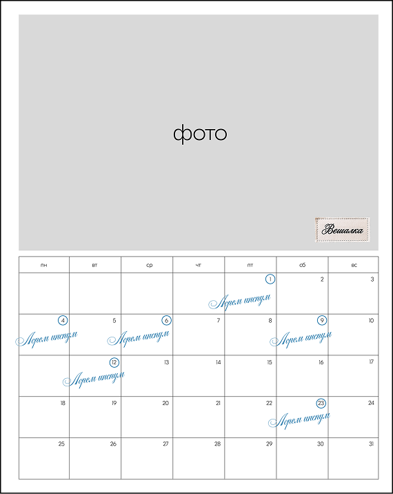
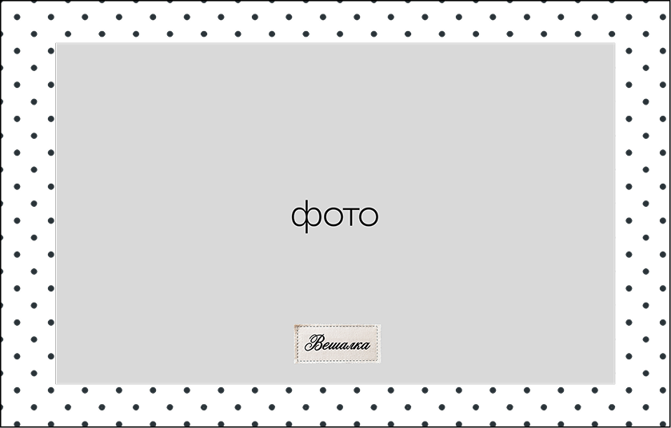
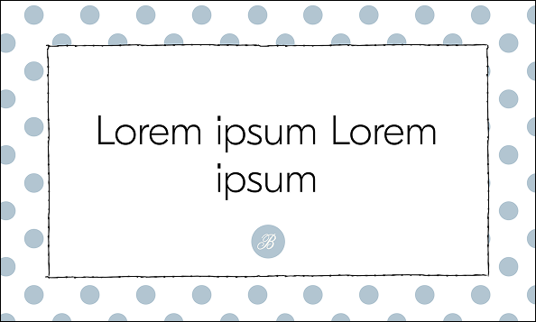
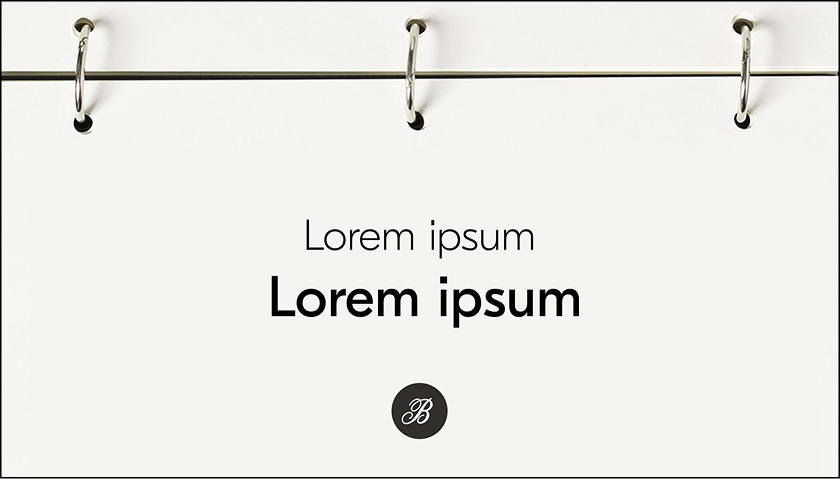
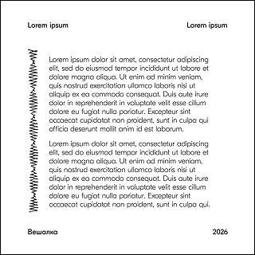